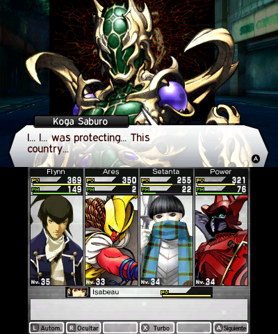

Pokémon Conquest: NPC names
Intro
Pokémon Conquest (NDS) is one of the games I would like to translate to Spanish. I have already created almost all the tools to extract, modify and insert the content. This time, I would like to focus in the story dialogs. Below is one example:
{char:0058}{speaker_color:2}{char_img:0}
Hey, you!{wait:48}20 You're {name1}, right? {color:49}Aurora{color:51}'s new
Warlord?
If you take a closer look you will notice we are missing something: we don’t know the name of the character speaking. This is a very important information for translators, because otherwise they are out of context. For instance, they won’t know the gender of the person speaking (in Spanish we have male and female version of nouns and adjetives).
So let’s try to figure out where are the names and how we can relate them to each dialog.
The location of the names
First, let’s find out where are the names inside the game files. I will pick the name of the person speaking in the example dialog: Koroku. So let’s open the game with an hexadecimal editor (I like HxD) and search the text. The search returns that the text is located at 0x00185134. We just need to know which game file is at that address. The easier method is to use Tinke. We open the game with this program and type in the search box the magic words: Offset: 00185134. It will show us at this address we have the file BaseBushou.dat.

We ran a quick test that this is indeed the file and field that we need to change by editing the name and importing back the file into the game.

Voilà. As you can see I changed in the file the name Koroku with Pleonet and now the latter is showing as the character speaking.
Matching the dialog with the name
We know the file that contains the list of names. This is useful in case we want to change them. But we don’t know who is speaking in the dialog yet. Let’s check again the raw dialog text:
{char:0058}{speaker_color:2}{char_img:0}
Hey, you!{wait:48}20 You're {name1}, right? {color:49}Aurora{color:51}'s new
Warlord?
There are a couple of interesting metadata in that dialog. In the actual game file they have binary bytes, but after some try-and-see changes I was able to determine that:
- By changing the first
00058 control code, the name of the person speaking changes. So I named it char from character.
- The second control code,
2 in some cases changes the color of the person speaking changes. So speaker_color.
- Finally, the third control code must be the sprite of the NPC. There are several per person to show different emotions, so I named it
char_img.
Clearly, the control code we should investigate further is the first one. Somehow the number 0058 is related to the text Koroku. We just need to know what kind of algorithm the game follows to get the text from the number. It’s time to do some disassembly.

As always, the easier method is to play until the game shows the dialog. Then, we search the text in the memory and put a read-breakpoint in the control code char (in binary 1B 40), so we can start following the game logic to associate the number with the name. In my case the search returned three copies of the text: 0x020C3B66, 0x020C4942 and 0x02263D4E. So three breakpoint since we can’t be sure which one the game will actually process.
The first one we expect to break is the third breakpoint because it contains the whole script in memory. This is probably the script file in memory. And from this location it will copy the text to another temporary places. And exactly as expected, I see that the game breaks there to copy our first control code argument 0058 into the temporary memory place (the stack): 0x02FE2F38. One more breakpoint there.
From the copy in the stack, it copies now the text into the already-known location of our second breakpoint. So we continue, and the game starts doing something more interesting as shown below:

This small algorithm convert the text into a number. The logic is simple: it substract each char 0x30 which is 0 in ASCII. So, 5 in ASCII is 0x35 minus 0x30 is 5. It’s this simple to convert a char into a number. Then it multiply the current result by 10 to move the result to the left and adds the next number.
The method iterates to try to find three control codes: 1B 40, 1B 73 and 1B 66. In order, they correspond to my named control codes: char, speaker_color and char_img. We found the subrouting that parse the first three control code that each dialog usually have. If the method is able to parse and convert each argument into a number, it stores the result in three output registers. For our number of interest, the result goes to another stack address: 0x02FE2F94. Let’s follow now this one.
The address was coming from the stack because is a variable from the caller (SP + 0x14). The first thing it does is to fail if the number is larger than 0x270F. Then, it calls again the previous subroutine to parse the numbers, because why not making the game a bit slower? Hands in the next subroutine where it compares our number with 0x3E8, gets the pointer to 0x022797F0 and go deep into the next function. The pointer seems to point to a game file, let’s try to find it… And yes, it’s the file ScenarioBushou.dat.

Our target argument number is actually an index. The game multiplies this number by 0x20 and reads four bytes: 88021264. It removes bits with bitwise shifts so it gets the bits from 17 to 21, in our case just 1. And… it does nothing with the result. 😦 😑
Back to the caller, there is still one more place where it can use our number. A few lines after, it checks if the number is between 0 and 1000. If this is the case, it gets again the pointer to ScenarioBushou.dat and call a new function: 0204FB80.
It checks if the number is larger than 0xD1, if that’s the case it returns an empty string \0. It gets again our four bytes flag field, but this time it gets the first 9 bits: 64. And just, before finishing this function, it gets the pointer to the file BaseBushou and start doing things.
If the number from the flag field is less than 0xFB, it multiplies the number by 0x14 and read four bytes from the file at that location (address: 0x7D0, content: 00967575). It gets the bits from 17 to 25 which is 0x4B. Now, from the file position 0x17A0, it jumps to this last number multiply by 0x0C: 0x02279188.
Remember this address? Yes! It’s pointing to our NPC name. Finally!

Summary
This was a chaos of parsing and reading unncessary files and fields but at the end the logic is simple.
The argument of the control code in the dialog text (0058) is the index to an structure with fixed length 32 bytes in ScenarioBushou.dat. We are interested in the first 9 bits of this structure. So we multiply 0058 by 0x20 and get the first 9 bits: 0x64. This is the index to another structure in BaseBushou.dat of fixed length 20 bytes. We multiply this second index by 0x14 and get the name index by reading the bits 17-25: 0x4B. The name will be starting at 0x17A0 multiplying the name index by the name lengths (0x0C).